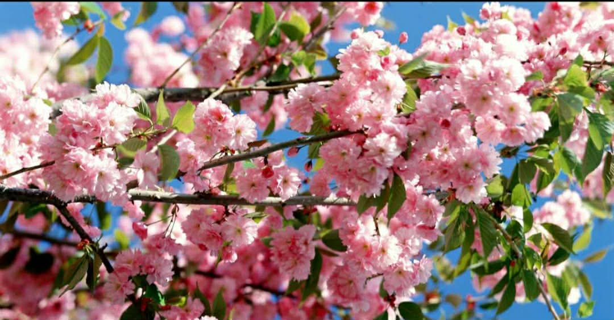
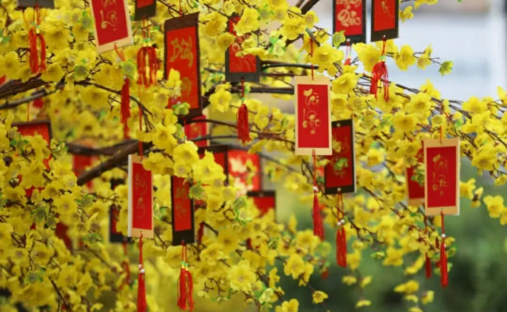

Hoa mai – hoa đào ngày Tết
Hoa mai (miền Nam) và hoa đào (miền Bắc) ngày Tết tượng trưng cho sức sống mãnh liệt, sự sinh sôi nảy nở, xua đuổi tà ma, mang đến may mắn, an khang thịnh vượng, bình an và khởi đầu mới tốt đẹp.
Màu vàng tượng trưng cho phú quý, màu hồng tượng trưng cho sinh khí, hạnh phúc, gắn kết gia đình.
Chúng không chỉ làm đẹp mà còn mang ý nghĩa tâm linh sâu sâu sắc, là linh hồn không thể thiếu của Tết Việt.
Hoa Anh Đào
Hoa Mai
Ý nghĩa hoa Mai (Miền Nam):
Biểu tượng: Sự may mắn, giàu sang, thịnh vượng.
Màu sắc: Vàng tươi rực rỡ, tượng trưng cho phú quý, sung túc.
Điềm lành: Mai nở rộ báo hiệu năm mới an khang, đặc biệt hoa 6 cánh là điềm cực tốt, hoa 5 cánh nở đều là may mắn.
Ý nghĩa hoa Đào (Miền Bắc):
Biểu tượng: Sinh sôi, nảy nở, xua đuổi tà ma, mang lại bình an, hạnh phúc.
Màu sắc: Hồng tươi thắm (đào bích) hay phớt nhẹ (đào phai), thể hiện sức sống, sự ấm áp.
Tâm linh: Từng là nơi trú ngụ của thần linh, có khả năng che chở khỏi tà khí, giúp gia đình hòa thuận, thịnh vượng.
Lời chúc năm mới
Nhân dịp năm mới, mọi người thường dành cho nhau những lời chúc tốt đẹp như:
- Chúc năm mới an khang thịnh vượng
- Học tập tiến bộ, đạt nhiều thành tích
- Gia đình hạnh phúc, vạn sự như ý
Tết Nguyên Đán không chỉ là ngày lễ truyền thống mà còn là nét đẹp văn hóa lâu đời của dân tộc Việt Nam.
Mỗi người cần trân trọng và gìn giữ những giá trị tốt đẹp của ngày Tết cổ truyền.